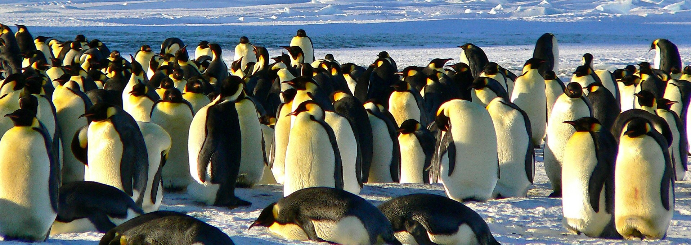

Learn some fun facts about the Antarctic penguins.

Kde žijí?
Protože existuje více než 17 různých druhů tučňáků, žijí roztroušeni jeden od druhého. Tučňáci mají domov v různých podnebích, podle typu tučňáka. Všichni tučňáci žijí na jižní polokouli – v Arktidě žádní tučňáci nejsou.
Jedí lední medvědi tučňáky?
Protože v Arktidě nejsou tučňáci a na jižní polokouli nejsou lední medvědi, tučňáky polární medvědi nežerou. To je jen běžný omyl. Lední medvědi a tučňáci se proto nikdy nesetkali. Přečtěte si více o tučňácích z Antarktidy!
A co jejich velikost?
Tučňáci císařští jsou největší ze všech tučňáků. Průměrný pták měří kolem 45 palců. Tučňáci jsou často nazýváni "létavci s ploutvemi" kvůli jejich snadnému pohybu ve vodě. Tento pták není schopen létat; jeho křídla jsou vyvinuta spíše pro plavání než
pro létání. Pod vodou mohou dosáhnout rychlosti až 15 až 25 mil za hodinu. Tučňáci císařští mohou dosáhnout hloubky až 1 850 stop!
Samci tučňáků císařských zůstávají asi 65 dní v ledových teplotách a divokých bouřích, aby udrželi vajíčka v teple. Během této doby teploty mimo dosah -76°F!
Skupině mláďat se říká jeseteři, skupiny tučňáků pak nazýváme kolonie.
Led se začíná lámat v prosinci, antarktické léto, právě když jsou mladí tučňáci připraveni plavat